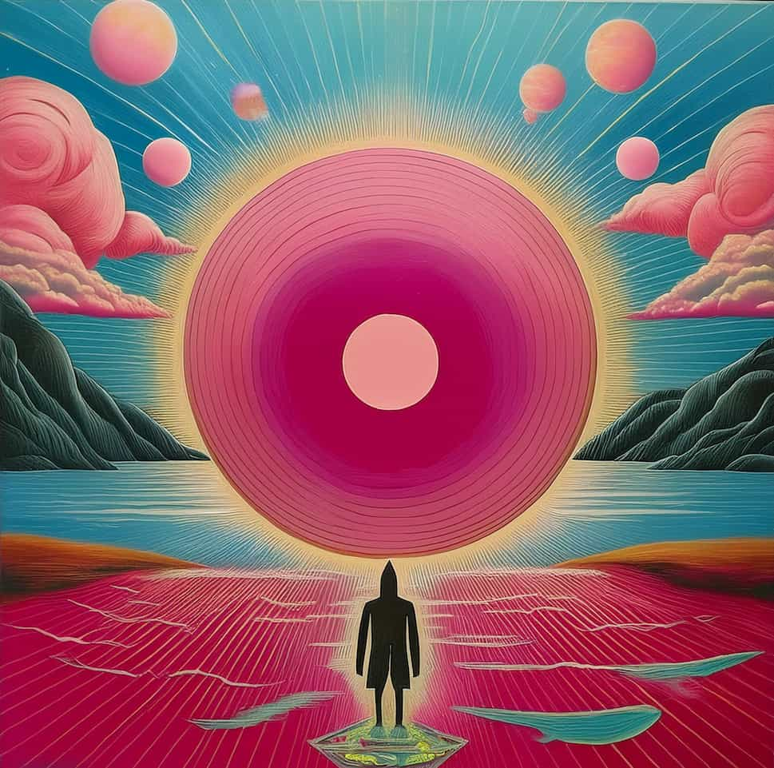

About Me
My name is Doug Butler. I am a father of 5 boys, grandfather to 3 grandchildren, husband to 1 wife and owner of a dog. I enjoy building stuff out of popsicle sticks and spending time with family. Pink floyd is my favorite band and the color scheme is meant to reflect their overall style. Salvador Dali is my favorite artist and combined with music and religeon influenced who I am. However, my greatest love along side family is my savior and his work. I strive every day to be a better man.
Inspired by Pink Floyd and Dalí
Pink Floyd and Salvador Dalí, though emerging from different artistic realms, share a surreal, boundary-pushing approach to creativity that deeply challenges perception. Both use vivid, often dreamlike imagery—whether through soundscapes or visual art—to evoke complex emotions and transport audiences into alternate realities. Pink Floyd’s atmospheric music, layered with philosophical lyrics, parallels Dalí's distorted landscapes and bizarre juxtapositions; both invite introspection and exploration of the subconscious. Their work can inspire someone to embrace unconventional perspectives, reject the ordinary, and see the world as fluid, strange, and full of possibility, encouraging new, bold forms of self-expression.